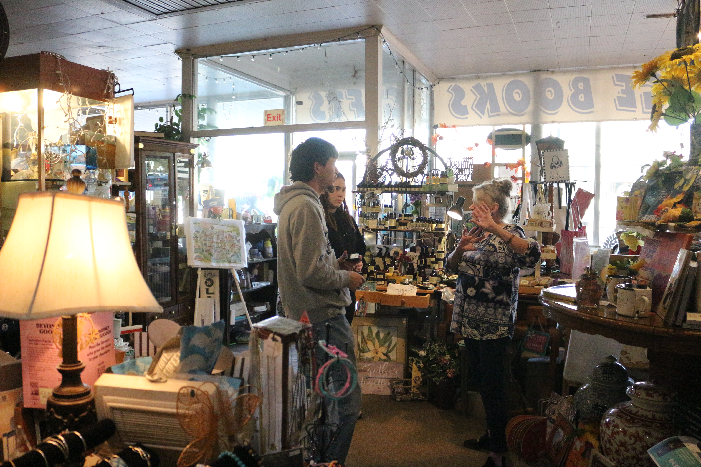
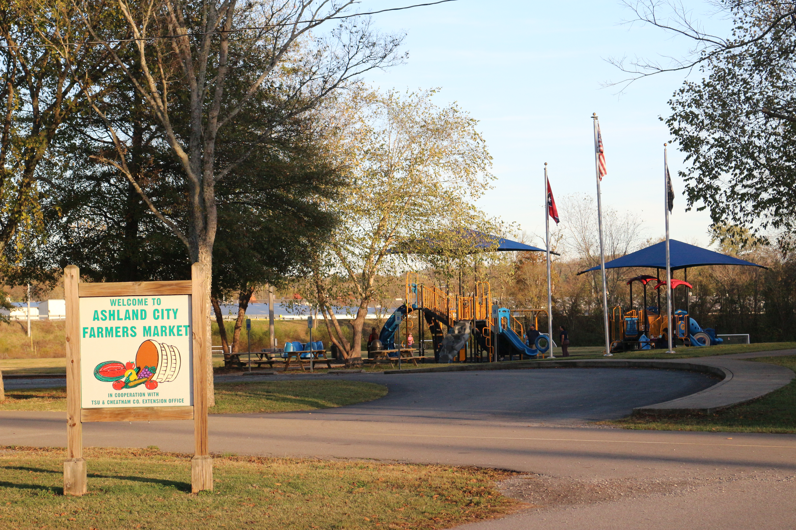
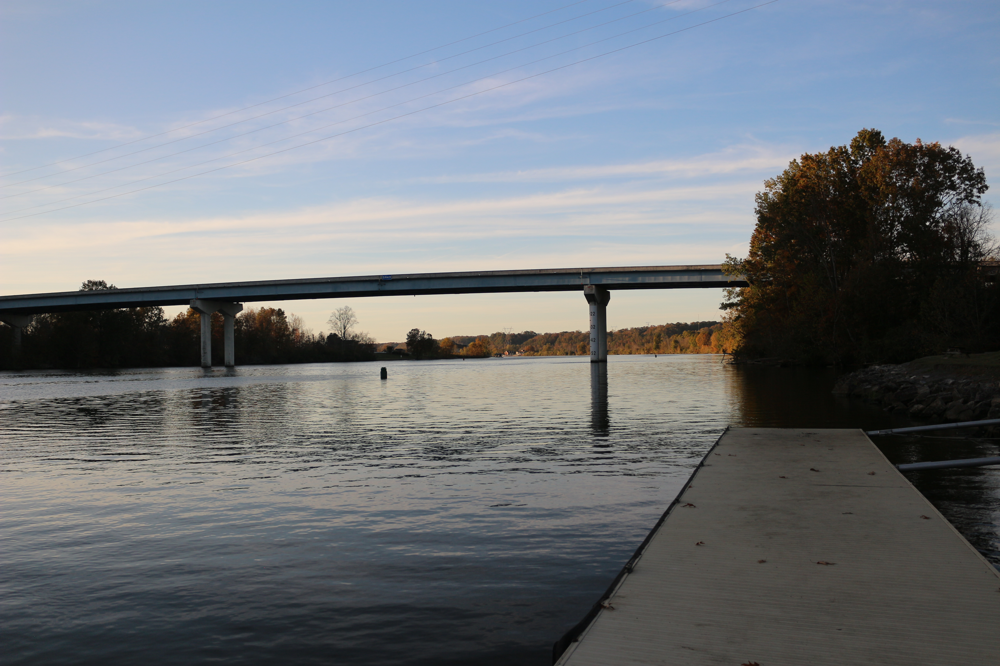

Tourism strategy
Cheatham County Tourism Initiative
A collaborative tourism initiative for Cheatham County, Tennessee. Our team identified a county-wide tourism alliance as the strongest strategy for unifying local tourism efforts.
We interviewed small-business owners and residents, then developed the proposal that was selected as the winning presentation by Cheatham County tourism leadership.


